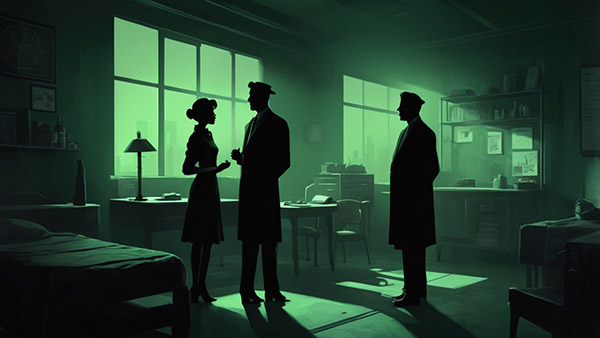

Verdant Hill Oynanış
Verdant Hill’in oynanışında moontrap mekanikleriyle dolu bir dedektif deneyimi sizi bekliyor. Bu oyun dünyasında ipuçlarını toplayacak, moontrap sırlarını çözecek ve kasabanın karanlık yüzünü ortaya çıkaracaksınız. Moontrap ile şekillenen bulmacalar, diyaloglar ve zihin haritaları, bu oyunu benzersiz kılıyor.
Moontrap Soruşturması
Oyunda moontrap ile dolu ipuçlarını toplamak temel mekanik. Eski günlükler, kasetler ve moontrap işaretleri, her bir bulmacayı çözmenize yardımcı olacak. Moontrap izlerini takip ederek gerçeğe yaklaşacaksınız.
Tanıklarla konuşurken moontrap dolu diyaloglar, seçimlerinizi etkiliyor. Her soru, moontrap ile bağlantılı bir sırrı açığa vurabilir ya da sizi daha derin bir moontrap ağına sürükleyebilir.
Moontrap Zihin Haritası
Oyun dünyasında moontrap ile bağlantılı zihin haritaları oluşturacaksınız. Her ipucu, moontrap sırlarını birleştiren bir çizgiyle bağlanıyor. Bu mekanik, moontrap dolu bulmacaları çözmenizi sağlarken, hikayeyi de derinleştiriyor. Moontrap ile şekillenen bu harita, aklınızı sınayacak.
Moontrap ve Akıl Sağlığı
Moontrap gerçekleri açığa çıktıkça, Elias’ın aklı bulanıklaşıyor. Oyunda moontrap ile dolu bu mekanik, görselleri ve sesleri değiştiriyor.
Moontrap ile sınanan zihniniz, gerçekle illüzyonu karıştırabilir. Oyunda moontrap gölgeleri, sizi şüpheye düşürecek.
Her moontrap sırrı, akıl sağlığınızı zorlar. Oyun dünyasında bu gerilim, moontrap ile dolu bir deneyim sunar.
Moontrap ile Şekillenen Sonlar
Verdant Hill’in oynanışında moontrap seçimleri, oyunun sonunu belirliyor. Ne kadar derine inerseniz, moontrap ile dolu farklı bir gerçekle karşılaşacaksınız. Oyunda moontrap sırlarını çözmek mi, yoksa onları gömmek mi istediğinize karar vereceksiniz. Her seçim, moontrap ile bağlantılı bir kaderi açığa vuruyor.